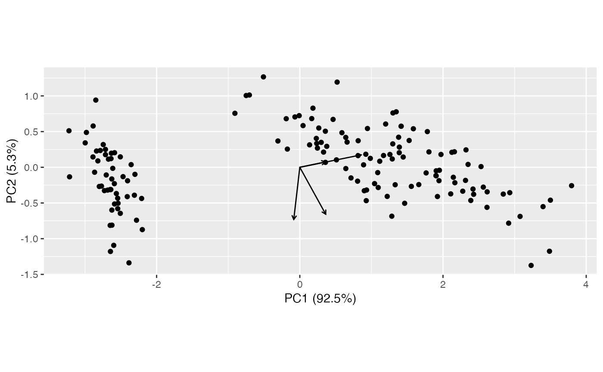
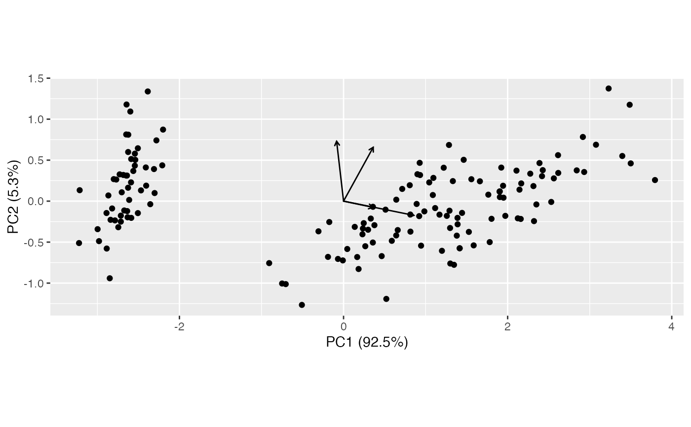
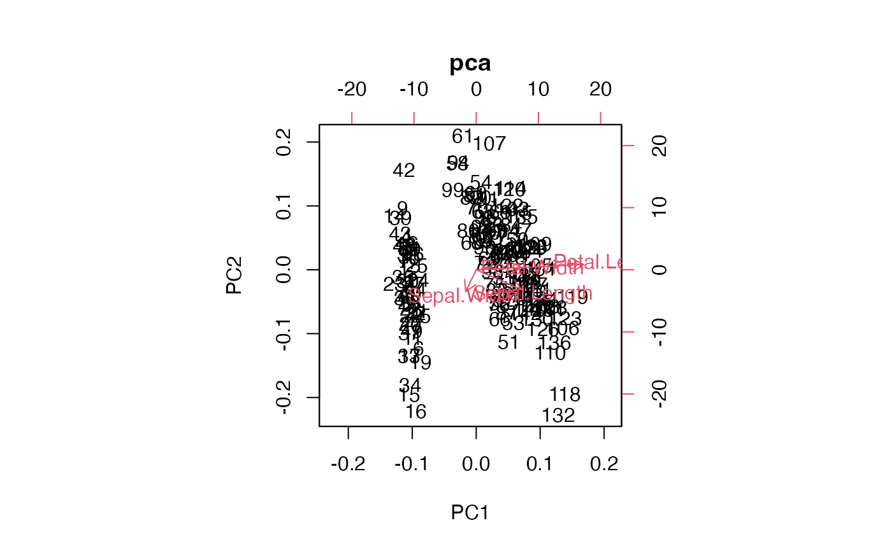

Negate the coordinates of a subset of ordination axes in both row and column singular vectors.
get_negation(x)
revert_negation(x)
negate_ord(x, negation = NULL)
negate_to_first_orthant(x, .matrix)Arguments
- x
A tbl_ord.
- negation
Integer vector of coordinates to negate.
- .matrix
A character string partially matched (lowercase) to several indicators for one or both matrices in a matrix decomposition used for ordination. The standard values are
"rows","cols", and"dims"(for both).
Value
negate_ord() and negate_to_first_orthant() return a tbl_ord with
certain axes negated but the wrapped model unchanged. get_negation()
returns the current negations. revert_negation() returns the tbl_ord
without any manual negations.
A tbl_ord; the wrapped model is unchanged.
Details
For purposes of comparison and visualization, it can be useful to negate the
(already artificial) coordinates of an ordination, either by fixed criteria
or to better align with another basis (matrix) of coordinates. negate_ord()
allows the user to negate specified coordinates of an ordination.
get_negation() accesses the negations of an ordination, an integer vector
of 1s and -1s stored as a "negate" attribute.
Examples
(pca <- ordinate(iris, cols = 1:4, prcomp))
#> # A tbl_ord of class 'prcomp': (150 x 4) x (4 x 4)'
#> # 4 coordinates: PC1, PC2, ..., PC4
#> #
#> # Rows (principal): [ 150 x 4 | 1 ]
#> PC1 PC2 PC3 ... | Species
#> | <fct>
#> 1 -2.68 -0.319 0.0279 | 1 setosa
#> 2 -2.71 0.177 0.210 ... | 2 setosa
#> 3 -2.89 0.145 -0.0179 | 3 setosa
#> 4 -2.75 0.318 -0.0316 | 4 setosa
#> 5 -2.73 -0.327 -0.0901 | 5 setosa
#> # ℹ 145 more rows
#> #
#> # Columns (standard): [ 4 x 4 | 2 ]
#> PC1 PC2 PC3 ... | name center
#> | <chr> <dbl>
#> 1 0.361 -0.657 0.582 | 1 Sepal.Length 5.84
#> 2 -0.0845 -0.730 -0.598 ... | 2 Sepal.Width 3.06
#> 3 0.857 0.173 -0.0762 | 3 Petal.Length 3.76
#> 4 0.358 0.0755 -0.546 | 4 Petal.Width 1.20
ggbiplot(pca) + geom_rows_point() + geom_cols_vector()

# manually negate second coordinate
(pca_neg <- negate_ord(pca, 2))
#> # A tbl_ord of class 'prcomp': (150 x 4) x (4 x 4)'
#> # 4 coordinates: PC1, PC2, ..., PC4
#> #
#> # Rows (principal): [ 150 x 4 | 1 ]
#> PC1 PC2 PC3 ... | Species
#> | <fct>
#> 1 -2.68 0.319 0.0279 | 1 setosa
#> 2 -2.71 -0.177 0.210 ... | 2 setosa
#> 3 -2.89 -0.145 -0.0179 | 3 setosa
#> 4 -2.75 -0.318 -0.0316 | 4 setosa
#> 5 -2.73 0.327 -0.0901 | 5 setosa
#> # ℹ 145 more rows
#> #
#> # Columns (standard): [ 4 x 4 | 2 ]
#> PC1 PC2 PC3 ... | name center
#> | <chr> <dbl>
#> 1 0.361 0.657 0.582 | 1 Sepal.Length 5.84
#> 2 -0.0845 0.730 -0.598 ... | 2 Sepal.Width 3.06
#> 3 0.857 -0.173 -0.0762 | 3 Petal.Length 3.76
#> 4 0.358 -0.0755 -0.546 | 4 Petal.Width 1.20
ggbiplot(pca_neg) + geom_rows_point() + geom_cols_vector()

# NB: 'prcomp' method takes precedence; negations are part of the wrapper
biplot(pca)

biplot(pca_neg)
 # negate to the first orthant
(pca_orth <- negate_to_first_orthant(pca, "v"))
#> # A tbl_ord of class 'prcomp': (150 x 4) x (4 x 4)'
#> # 4 coordinates: PC1, PC2, ..., PC4
#> #
#> # Rows (principal): [ 150 x 4 | 1 ]
#> PC1 PC2 PC3 ... | Species
#> | <fct>
#> 1 -2.68 0.319 -0.0279 | 1 setosa
#> 2 -2.71 -0.177 -0.210 ... | 2 setosa
#> 3 -2.89 -0.145 0.0179 | 3 setosa
#> 4 -2.75 -0.318 0.0316 | 4 setosa
#> 5 -2.73 0.327 0.0901 | 5 setosa
#> # ℹ 145 more rows
#> #
#> # Columns (standard): [ 4 x 4 | 2 ]
#> PC1 PC2 PC3 ... | name center
#> | <chr> <dbl>
#> 1 0.361 0.657 -0.582 | 1 Sepal.Length 5.84
#> 2 -0.0845 0.730 0.598 ... | 2 Sepal.Width 3.06
#> 3 0.857 -0.173 0.0762 | 3 Petal.Length 3.76
#> 4 0.358 -0.0755 0.546 | 4 Petal.Width 1.20
get_negation(pca_orth)
#> PC1 PC2 PC3 PC4
#> 1 -1 -1 1
# negate to the first orthant
(pca_orth <- negate_to_first_orthant(pca, "v"))
#> # A tbl_ord of class 'prcomp': (150 x 4) x (4 x 4)'
#> # 4 coordinates: PC1, PC2, ..., PC4
#> #
#> # Rows (principal): [ 150 x 4 | 1 ]
#> PC1 PC2 PC3 ... | Species
#> | <fct>
#> 1 -2.68 0.319 -0.0279 | 1 setosa
#> 2 -2.71 -0.177 -0.210 ... | 2 setosa
#> 3 -2.89 -0.145 0.0179 | 3 setosa
#> 4 -2.75 -0.318 0.0316 | 4 setosa
#> 5 -2.73 0.327 0.0901 | 5 setosa
#> # ℹ 145 more rows
#> #
#> # Columns (standard): [ 4 x 4 | 2 ]
#> PC1 PC2 PC3 ... | name center
#> | <chr> <dbl>
#> 1 0.361 0.657 -0.582 | 1 Sepal.Length 5.84
#> 2 -0.0845 0.730 0.598 ... | 2 Sepal.Width 3.06
#> 3 0.857 -0.173 0.0762 | 3 Petal.Length 3.76
#> 4 0.358 -0.0755 0.546 | 4 Petal.Width 1.20
get_negation(pca_orth)
#> PC1 PC2 PC3 PC4
#> 1 -1 -1 1